Git과 GitHub는 어떻게 다른가요
강사는 "Git은 커피, GitHub는 그 커피를 내주는 카페"라는 비유로 시작해요. 둘은 이어져 있지만 같은 게 아니에요.
Git은 내 컴퓨터에서 도는 도구예요. 파일의 어느 줄이 언제, 누구 손으로 바뀌었는지 기록하고, 원하면 예전 버전으로 바로 돌아가게 해 줘요. 코드만이 아니라 이미지·텍스트·영상 같은 파일도 다뤄요. 고객이 한 달 뒤 "예전 버전이 나았어요"라고 해도, 이미 덮어쓴 코드를 되살릴 수 있어요. 그래서 버전 관리 시스템이라고 불러요. 만든 사람은 리눅스를 만든 리누스 토르발스예요.
GitHub가 필요한 순간
아래 화면처럼 나와 팀원이 각자 컴퓨터에서 같은 프로젝트를 고치면, 버전이 사람 수만큼 따로 생겨요. 왼쪽 창 위에는 Your Version, 오른쪽에는 Teammate Version이라는 꼬리표가 붙어 있어요.
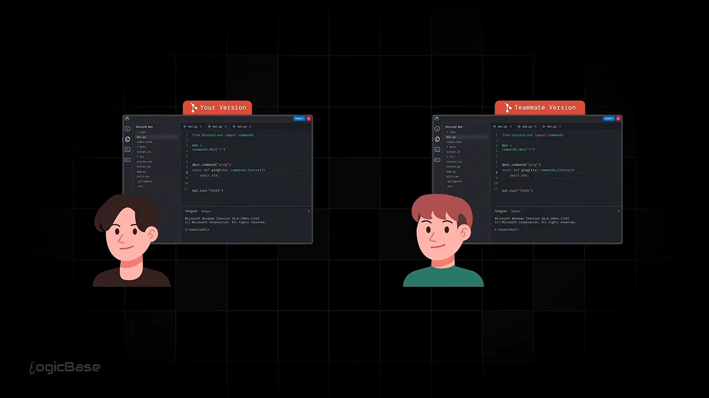
그 장소가 GitHub예요. 슬라이드의 두 단어 'CENTRAL'과 'ONLINE SERVER'가 역할을 그대로 말해요. 다들 자기 작업을 이 중앙 서버로 올리고, 여기서 하나로 합쳐요. GitLab과 Bitbucket도 같은 일을 하지만 가장 널리 쓰이는 건 GitHub이고, 지금은 마이크로소프트가 운영해요.
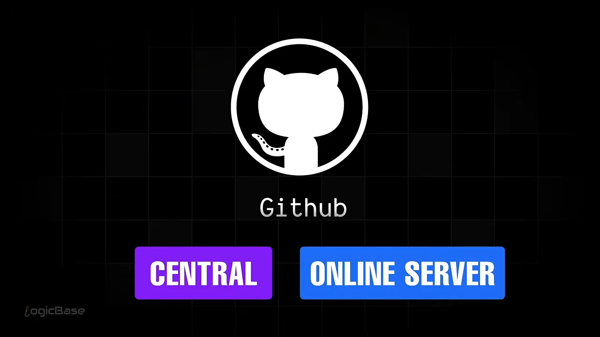
로컬 세 단계와 원격
강사는 이 구조만 이해하면 나머지 Git 명령은 쉬워진다고 말해요. Git은 로컬(내 컴퓨터)과 원격(클라우드) 두 부분으로 나뉘고, 로컬 안에서 변경이 세 단계를 거쳐요.
아래 슬라이드의 숫자 1·2·3이 그 순서예요. 1번 작업 디렉터리에서 파일을 고치고, 2번 'STAGE'에 "이 변경은 준비됐어요"라고 올려 두고, 가운데 'COMMIT'으로 3번 로컬 저장소에 확정해요.
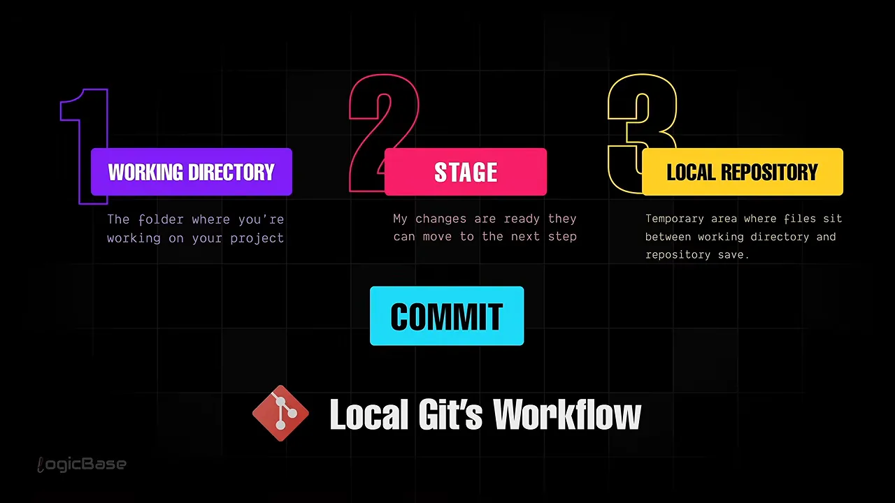
저장소는 파일의 모든 버전과 전체 변경 기록이 들어 있는 곳이에요. 다음 슬라이드에서는 같은 폴더 구조가 Version 1·2·3으로 나란히 쌓이고, 아래에 History 꼬리표가 붙어요. 강사는 이걸 코드의 디지털 서류함이라고 불러요. Git이 저장소 안에 시스템 파일을 만들어 기록을 직접 관리해요.
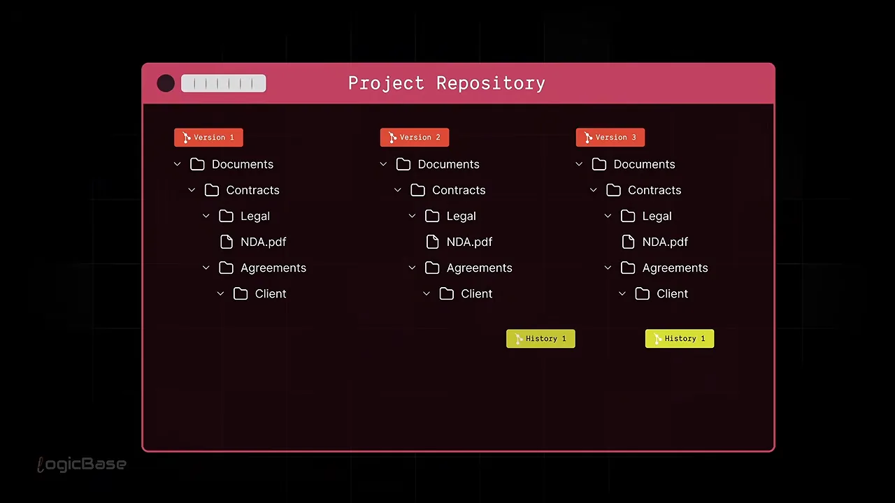
원격 저장소는 언제 쓰나요
여기까지는 모두 내 컴퓨터 안의 일이에요. 남과 코드를 나누거나, 다른 컴퓨터에서 이어 하거나, 백업해 두고 싶을 때 원격 저장소가 필요해요. 그림에서 노란 'PUSH' 화살표가 3번 로컬 저장소에서 아래 'REMOTE' 칸으로 내려가요. 구글 드라이브에 사진을 올려 두는 것과 같은 이유예요. 원격에 올려 두면 다른 컴퓨터로 다시 끌어올 수도 있어요.
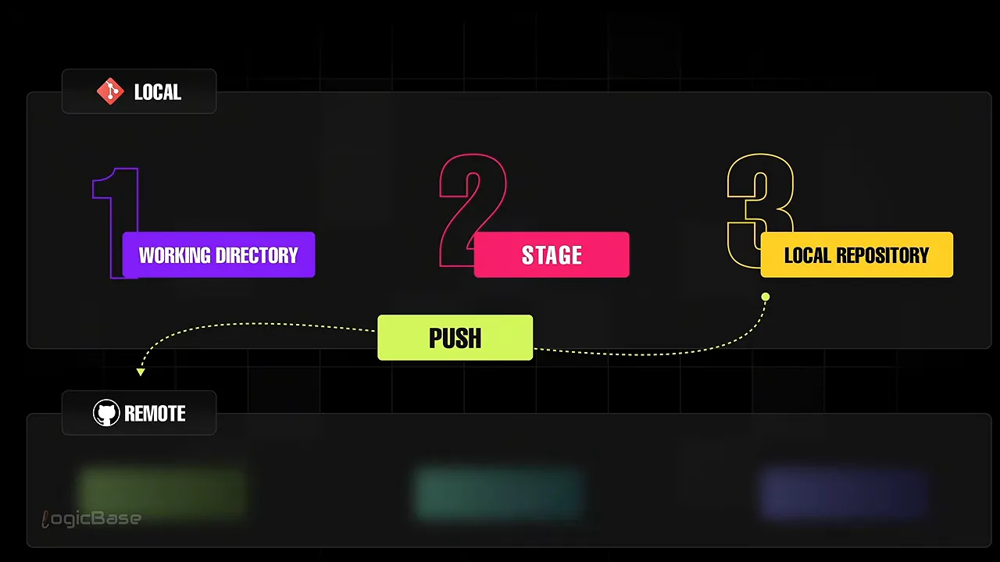
저장소를 만드는 두 가지 길: init과 clone
설치는 git-scm.com의 다운로드 페이지에서 OS(Operating System)를 고르면 돼요. 맥은 Homebrew로 설치하는 방법이 안내돼 있어요. 윈도우에서는 설치할 때 함께 오는 Git Bash를 쓰는 개발자가 많아요. 리눅스 터미널과 비슷해서 Git 명령을 치기 편하기 때문이에요. 설치가 끝나면 git --version으로 버전이 나오는지 확인해요.
있는 폴더를 저장소로: git init
강사는 바탕화면에 git-one 폴더를 만들고 파일 몇 개를 넣은 뒤 git init을 실행해요. 화면에 "Initialized empty Git repository"가 뜨고, ls -la로 숨은 파일까지 보면 .git 폴더가 새로 생겨 있어요. 이 폴더가 저장소의 본체예요. 어떤 파일이 바뀌었는지, 누가 바꿨는지, 이전 버전이 무엇인지 Git이 모두 여기에 적어요.
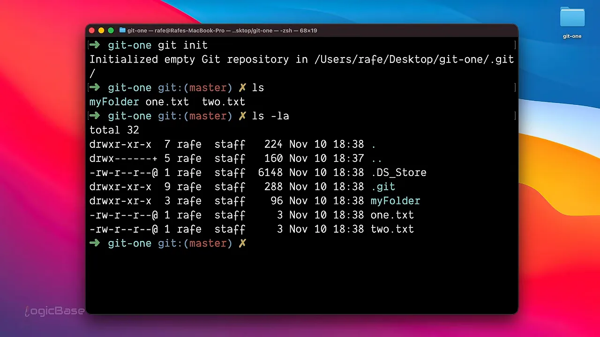
ls -la 결과의 .git이 Git이 만든 폴더예요. 프롬프트에는 브랜치 이름 master가 보여요. 영상 15:27에서 보기GitHub에 있는 저장소를 내려받기: git clone
다른 길은 GitHub에서 저장소를 먼저 만드는 거예요. 강사는 git-journey라는 공개 저장소를 만들고 웹에서 1.txt와 2.txt를 커밋해요. 그다음 Code 버튼의 HTTPS(Hypertext Transfer Protocol Secure) 주소를 복사해 git clone <주소>를 실행해요.
아래 그림 왼쪽이 git init으로 만든 로컬 저장소, 오른쪽이 GitHub의 원격 저장소예요. clone으로 받은 폴더에도 .git이 있어서, 그 자체로 완전한 저장소예요.
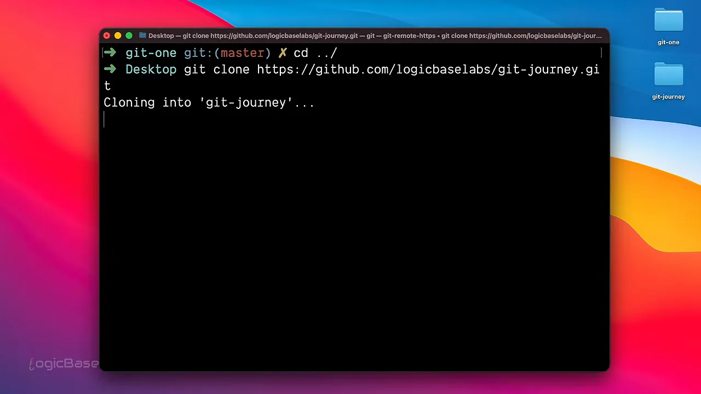
화면을 잘 보면 차이가 하나 있어요. git init으로 만든 git-one의 프롬프트는 git:(master)인데, clone한 git-journey에서는 git:(main)이에요. 영상은 이 차이를 따로 설명하지 않아요.
변경을 기록하고, 지우고, 돌아보기
여기서부터는 clone한 git-journey 폴더에서 실습해요. 1.txt와 2.txt 끝에 숫자를 하나씩 더 적고 git status를 치면, Git이 바뀐 파일을 바로 알아채요. 점선 상자 안 Changes not staged for commit 아래에 modified: one.txt, modified: two.txt가 빨간 글씨로 보여요.
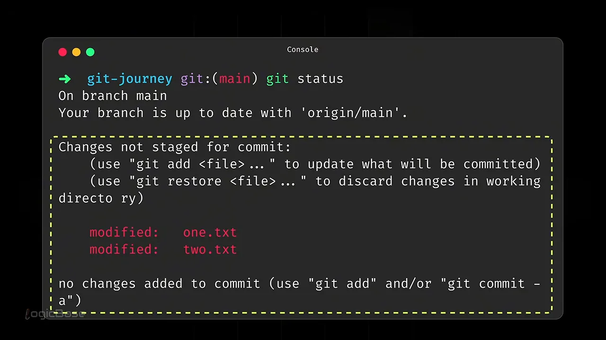
새로 만든 myFolder는 untracked로 따로 나와요. clone해 온 파일은 Git이 이미 알고 있지만, 새 폴더는 아직 모르기 때문이에요.
git add, 범위가 조금씩 달라요
스테이징 영역으로 옮기는 명령이 git add예요. 강사는 다섯 가지 쓰임을 하나씩 시험해요.
| 명령 | 무엇을 스테이징하나요 |
|---|---|
git add --all · git add -A | 프로젝트 전체의 모든 변경. 둘은 똑같아요 |
git add . | 지금 있는 폴더와 그 하위 폴더의 변경 |
git add * | 새 파일과 고친 파일만. 지운 파일은 빠져요 |
git add *.txt | 현재 폴더의 .txt 파일. 하위 폴더와 지운 파일은 빠져요 |
git add 1.txt · git add myFolder/3.txt | 이름을 준 파일 하나 |
.과 -A의 차이는 아래 화면에서 보여요. myFolder 안에서 git add .을 치자, 위 Changes to be committed에는 three.txt만 올라가요. 루트에 있는 ../one.txt와 ../two.txt는 아래 not staged 쪽에 그대로 남아요.
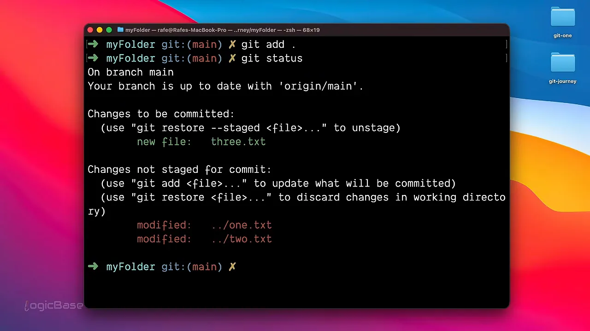
.)은 지금 폴더 아래만 뜻해요. 어디서 쳤는지가 결과를 바꿔요. 영상 26:20에서 보기별표(*)는 또 달라요. 2.txt를 지우고 4.txt를 새로 만든 뒤 git add *를 치면 4.txt만 스테이징되고 지운 2.txt는 빠져요. 슬라이드의 초록 칸 'NEW OR MODIFIED'와 빨간 칸 'NOT DELETED ONES'가 이 규칙이에요.
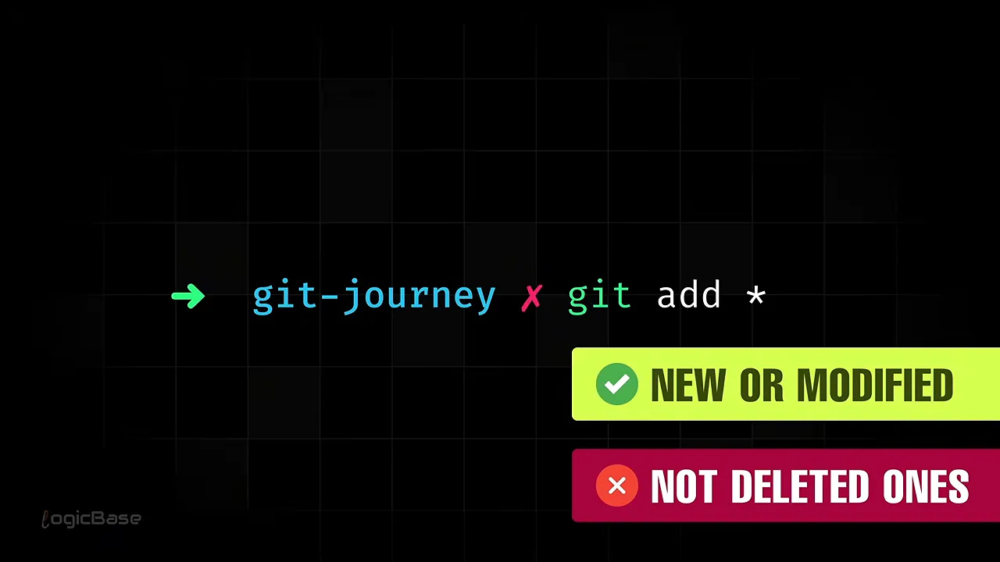
-A나 .을 써요. 영상 28:20에서 보기강사가 권하는 기본은 루트 폴더로 가서 git add .을 치는 거예요. 스테이징을 통째로 취소하고 싶을 땐 git reset을 쓰면 변경이 작업 디렉터리로 돌아가요.
커밋하고, 처음이라면 이름부터
스테이징한 변경을 로컬 저장소에 확정하는 게 커밋이에요. 강사의 비유로는, 거울 앞에서 옷과 신발을 한 번 더 보고 고치는 게 스테이징이고, 다 됐다 싶을 때 문을 나서는 게 커밋이에요. 명령은 git commit -m "메시지"예요.
Git을 처음 설치하고 커밋하면 아래처럼 "Author identity unknown"과 "Please tell me who you are"가 떠요. 커밋마다 누가 했는지 기록해야 하기 때문이에요. 화면에 나온 대로 두 줄을 실행하면 해결돼요.
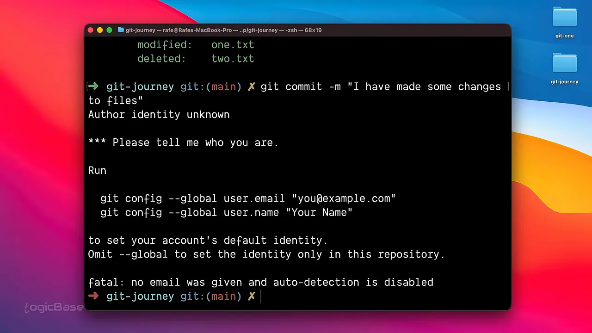
git config --global user.email "you@example.com"
git config --global user.name "Your Name"--global은 이 컴퓨터의 모든 저장소에 적용돼요. 저장소 하나에만 다르게 쓰려면 그 폴더에서 --local로 설정해요. 마지막 커밋을 취소하고 변경을 작업 디렉터리로 되돌리고 싶다면 git reset HEAD~를 써요.
파일 지우기: git rm
파일을 직접 지우고 git add하는 두 단계를 git rm 파일 하나로 줄일 수 있어요. 지우는 동시에 스테이징까지 해 줘요.
그런데 고치고 커밋하지 않은 파일은 Git이 지우지 않아요. 아래 화면처럼 "the following file has local modifications"라는 오류를 내고, --cached로 파일을 남기거나 -f로 강제로 지우라고 안내해요.
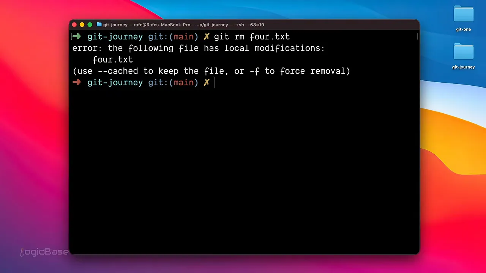
git rm -f 파일: 강제로 지워요.git rm --cached 파일: 파일은 폴더에 남기고 Git의 추적에서만 빼요. 그 파일은 untracked가 돼요.git rm -r 폴더: 폴더와 그 안을 모두 지워요.
되돌릴 때 하나 조심할 게 있어요. 평범한 git reset은 스테이징만 풀어서, 지운 파일은 돌아오지 않아요. 지운 파일까지 마지막 커밋 상태로 살리려면 git reset --hard가 필요해요.
기록 보기: git log
git log를 치면 커밋마다 긴 문자열(커밋 ID), 작성자, 날짜, 메시지가 차례로 나와요. 아래 화면의 맨 위가 방금 만든 커밋이고, 그 아래 두 개는 GitHub에서 파일을 만들 때 생긴 커밋이에요.
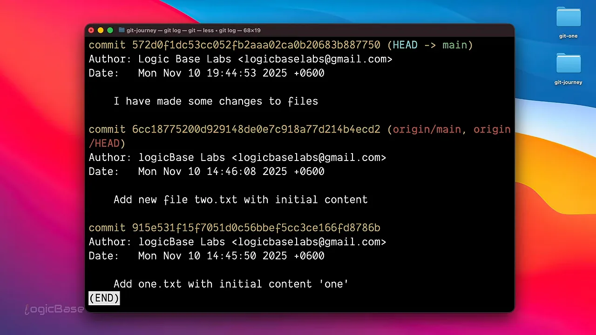
HEAD -> main이 지금 위치예요. 이 ID로 나중에 예전 버전으로 갈 수 있어요. 영상 40:20에서 보기git log --oneline은 한 커밋을 한 줄로, ID도 짧게 줄여 보여 줘요. 짧은 ID로도 예전 버전으로 돌아갈 수 있어요. 로그 화면에서 빠져나올 땐 q를 눌러요.
브랜치, 병합, 충돌
브랜치는 독립된 개발 줄기예요. 강사의 비유로는 큰 식당 주방이에요. 손님에게 나가는 요리는 본 주방(main)에서 만들어요. 새 요리를 시험할 땐 본 주방을 어지럽히지 않고 시험 주방에서 만들어 본 뒤, 완성되면 본 주방으로 들여와요.
Git도 같아요. main을 직접 고치지 않고 development 같은 브랜치에서 작업하고 테스트한 뒤 main에 합쳐요(merge). 아래 그림에서 빨간 'MAIN' 줄에서 갈라진 노란 'DEVELOPMENT' 줄이 'COMMIT 2'를 거쳐 'MERGED' 지점에서 다시 합쳐져요. 아래에 'REVIEW', 'TEST', 'MANAGE'가 브랜치가 주는 세 가지 이점이에요.
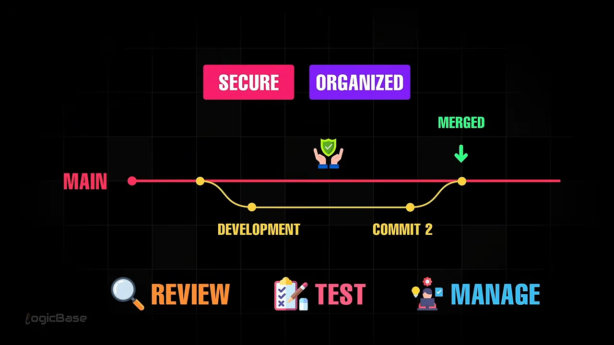
만들고, 옮기고, 합치기
| 명령 | 하는 일 |
|---|---|
git branch | 브랜치 목록을 보여 줘요. 지금 브랜치에 *가 붙어요 |
git branch development | 새 브랜치를 만들어요. 지금 브랜치의 상태를 그대로 물려받아요 |
git checkout development | 그 브랜치로 옮겨 가요 |
git merge main | 지금 브랜치에 main의 변경을 합쳐요 |
development에서 three.txt를 만들어 커밋하고 main으로 돌아오면, 파인더에서 three.txt가 사라져요. 커밋은 그걸 만든 브랜치에만 속하기 때문이에요. Git은 브랜치를 옮길 때마다 그 브랜치에 맞는 파일만 보여 줘요. 그래서 변경이 그 브랜치 것이 되려면 반드시 그 브랜치에서 커밋해야 해요.
그다음 main에서도 4.txt를 고쳐 커밋해요. 이제 두 브랜치가 각자 새 커밋을 가져요. 강사는 먼저 development로 가서 git merge main으로 main을 받아 맞추고, 다시 main으로 와서 git merge development로 development를 합쳐요.
충돌은 이렇게 나고, 이렇게 풀어요
충돌은 같은 파일의 같은 부분을 두 브랜치가 다르게 고쳤을 때 나요. Git은 어느 쪽을 남길지 정할 수 없어서 사람에게 맡겨요. 시연은 세 브랜치를 오가요. 순서를 먼저 그림으로 보면 따라가기 쉬워요.
gitGraph commit id: "main 최신" branch development checkout main branch staging commit id: "changed 44" checkout development commit id: "added 444" merge staging id: "충돌 해결" checkout staging merge development checkout main merge staging
staging 브랜치에서는 4.txt 끝에 44를, development에서는 같은 자리에 444를 적고 각각 커밋해요. development에서 git merge staging을 치자 아래처럼 "CONFLICT (content): Merge conflict in four.txt"와 "Automatic merge failed"가 떠요.
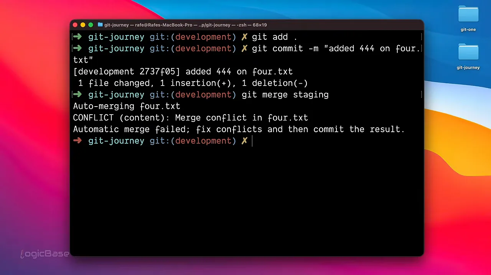
4.txt를 열면 Git이 충돌 부분을 표시해 둬요. <<<<<<< HEAD와 ======= 사이가 지금 브랜치(development)의 444, =======과 >>>>>>> staging 사이가 staging에서 온 44예요.
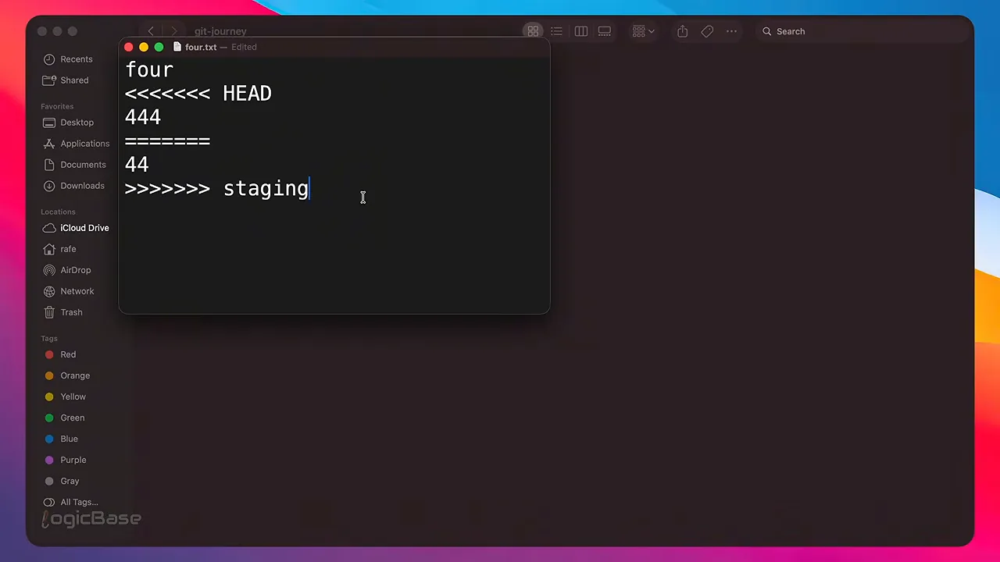
강사는 444를 남기고 표시 세 줄을 지운 뒤 저장해요. 그리고 git add ., git commit -m "Merge conflict solve"로 해결을 커밋해요. 아래 화면 마지막 줄에 해결 커밋이 보여요.
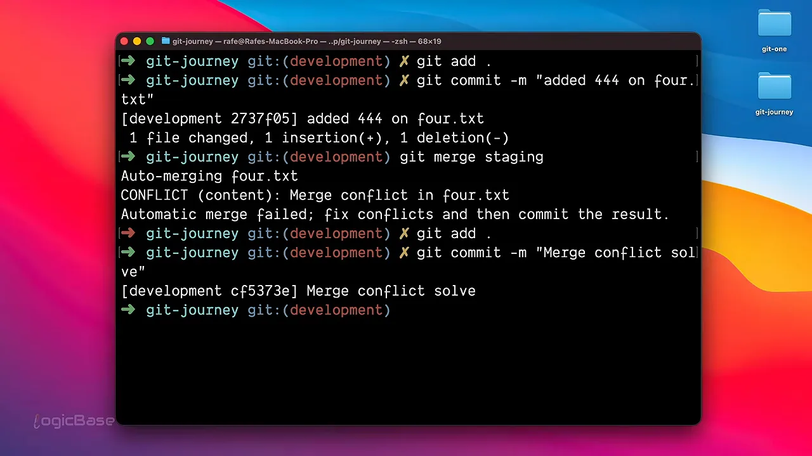
이제 staging으로 가서 git merge development를 하면 두 브랜치 내용이 같아져 충돌 없이 합쳐져요. 마지막으로 main에서 git merge staging을 하면 최신 변경이 main까지 들어가요.
강사는 다음 장으로 넘어가며 브랜치를 그림 하나로 정리해요. main에서 staging, development가 갈라지고, development에서 다시 frontend가, 위로 backend가 갈라져 각자 일한 뒤 main으로 돌아와요.
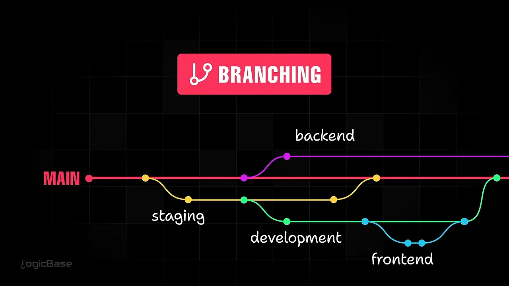
지난 커밋으로 가 보고 비교하기
앞에서 git checkout에 브랜치 이름을 줬다면, 이번엔 커밋 ID를 줘요. 강사는 1.txt에 hello를 적어 "update one.txt file" 커밋을 하나 더 만들고, git log --oneline에서 그보다 앞선 커밋 ID cf5373e를 복사해 git checkout cf5373e를 쳐요.
아래 화면처럼 Git이 "You are in 'detached HEAD' state"라고 알려 줘요. 브랜치가 아니라 특정 커밋을 보고 있다는 뜻이에요. 1.txt를 열어 보면 방금 적은 hello가 없어요. 프로젝트가 그 커밋 시점으로 돌아간 거예요.
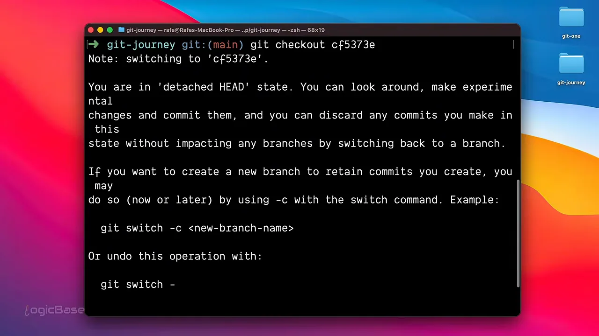
두 가지를 기억해 두면 돼요. 커밋하지 않은 변경이 있으면 Git이 이동을 막아요. 그리고 최신 상태로 돌아올 땐 git checkout main처럼 브랜치 이름으로 다시 이동해요.
두 커밋 비교하기: git diff
git diff <ID1> <ID2>는 두 커밋 사이에서 무엇이 바뀌었는지 보여 줘요. 지운 줄은 빨강 -, 더한 줄은 초록 +예요. 강사는 최신 커밋 ID를 앞에, 이전 커밋을 뒤에 두라고 하고, 순서를 바꾸면 관점이 반대가 된다고 설명해요.
아래가 강사가 최신 커밋(f662069, hello를 더한 커밋)을 앞에 두고 친 결과예요. 빨간 -Hello가 보여요.
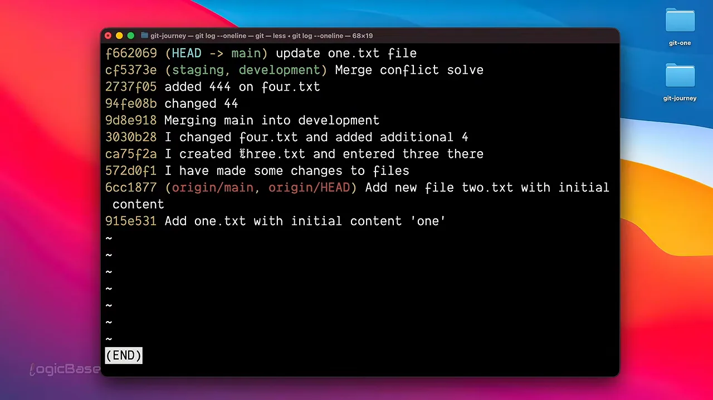
-)로 나와요. 영상 55:04에서 보기원격과 주고받기: push, fetch, pull
지금까지는 모두 로컬 저장소 안의 일이었어요. 이제 원격(GitHub)과 주고받는 세 명령이에요. 아래 슬라이드가 셋을 한 줄씩 정리해요. 'PUSH'는 로컬 변경을 원격으로 보내고, 'FETCH'는 원격 변경을 로컬 저장소로 가져오되 아직 합치지 않아요.
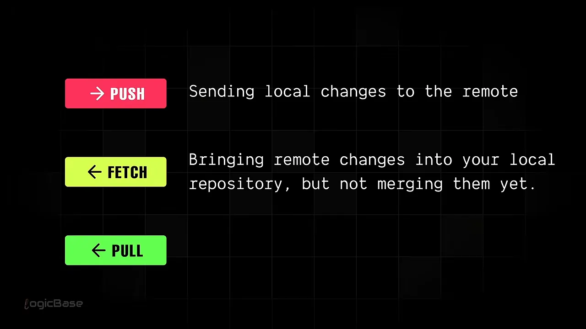
pull은 fetch에 merge를 더한 거예요. 받아 와서 바로 내 작업 파일까지 반영해요. 슬라이드도 'PULL = FETCH + MERGE' 한 줄이에요.
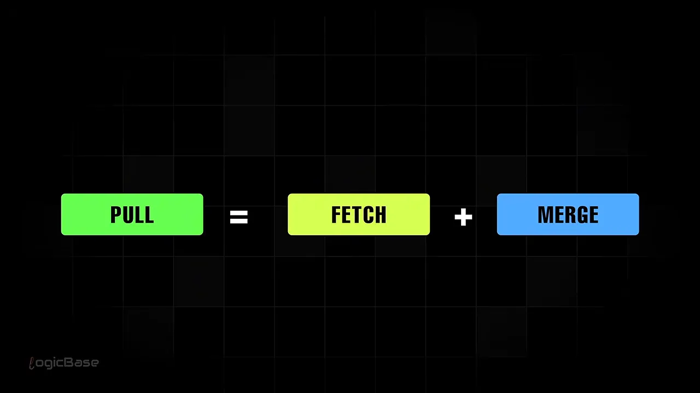
push는 브랜치마다 따로
git push origin main에서 origin은 원격 저장소의 이름, main은 보낼 브랜치예요. 이렇게 하면 main만 올라가고 다른 브랜치는 안 올라가요. 강사는 staging으로 옮겨 git push origin staging을 쳐요. 아래 화면 끝에 * [new branch] staging -> staging이 보여요. GitHub에 staging 브랜치가 새로 생긴 거예요. development도 같은 방법으로 올려 세 브랜치를 모두 맞춰요.
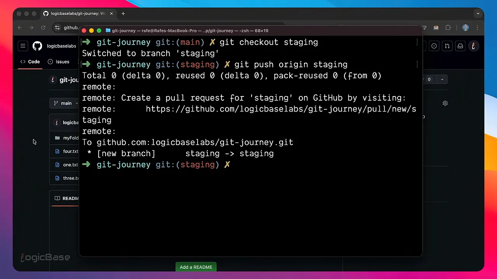
fetch와 pull을 직접 비교해 보기
강사는 GitHub 웹에서 3.txt에 three를 적어 커밋해요. 이제 원격 main이 로컬보다 앞서 있어요. 로컬에서 git fetch만 치면 변경은 받아 오지만 3.txt는 그대로예요. git merge까지 해야 파일에 보여요. 다시 웹에서 33을 더하고, 이번엔 git pull 한 번으로 받아 와 바로 반영해요.
강사는 push, fetch, pull 세 개만으로도 일상 개발은 대부분 충분하다고 말해요.
되돌리고 잠시 치워 두기: restore, stash, revert
이 장은 "하던 일을 어떻게 무르나"를 세 상황으로 나눠 보여 줘요. 명령마다 쓰는 때가 달라요.
| 상황 | 명령 | 결과 |
|---|---|---|
| 커밋 전 변경이 틀렸어요 | git restore 파일 | 마지막 커밋 상태로 돌아가요 |
| 스테이징만 풀고 싶어요 | git restore --staged 파일 | 작업 파일은 그대로, 스테이징만 빠져요 |
| 하던 일을 잠깐 치워야 해요 | git stash | 변경을 임시 보관소에 넣어 둬요 |
| 이미 한 커밋을 무르고 싶어요 | git revert <ID> | 되돌리는 새 커밋을 만들어요 |
restore: 커밋 전 변경을 버리기
새 기능을 만들다가 10~15개 파일을 고쳤는데 방향이 틀렸다고 해 봐요. 파일을 하나씩 열어 새 줄을 지우는 건 정확하게 하기 사실상 불가능해요. git restore 1.txt를 치면 그 파일이 마지막 커밋 상태로 돌아가요. 폴더 이름을 주면 폴더째, git restore .이면 저장소 전체가 돌아가요. 이미 git add한 변경은 --staged를 붙여 스테이징에서만 빼요.
stash: 반쯤 한 일을 잠깐 치워 두기
큰 기능을 반쯤 만들었는데 동료가 다른 브랜치의 새 기능을 봐 달라고 해요. 아직 커밋할 상태가 아니에요. 아래 그림에서 노란 feature 줄 끝의 'YOU ARE HERE'가 지금 위치이고, 위쪽 backend 줄의 'CHECK THIS'가 봐야 할 곳이에요.
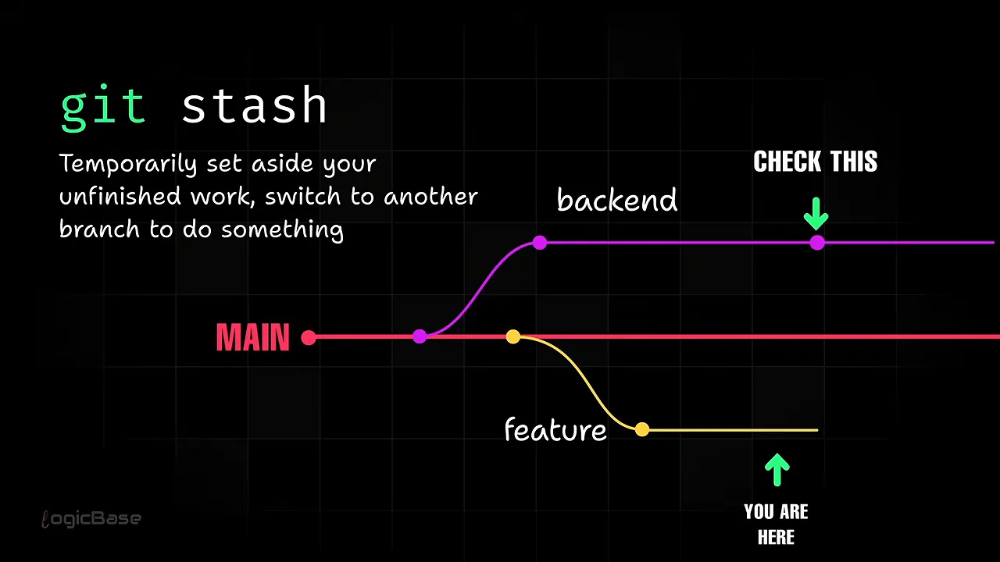
커밋하지 않은 변경이 있는 채로 git checkout development를 치면, 아래 화면 위쪽처럼 Git이 "Please commit your changes or stash them before you switch branches"라며 이동을 막아요. 여기서 git stash를 치면 "Saved working directory and index state"가 뜨고, 변경이 작업 디렉터리에서 사라져 보관소로 들어가요.
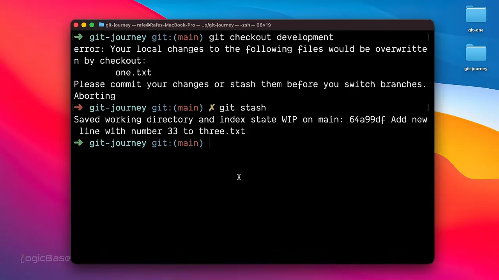
다른 브랜치를 보고 돌아와서 보관한 변경을 꺼내는 방법이 둘이에요. git stash pop은 꺼내면서 목록에서 지워요. 강사는 잘라내기 같다고 해요. git stash apply는 꺼내되 목록에 남겨서 나중에 또 쓸 수 있어요. 아래 그림에서 apply 뒤 왼쪽 Stash List와 오른쪽 Working Dir에 Stash One·Two·Three가 똑같이 있어요.
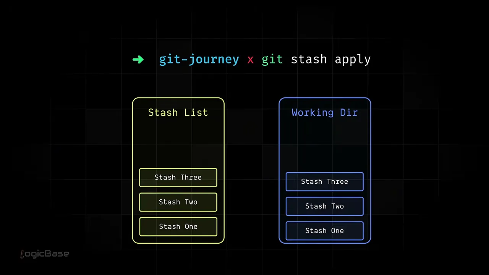
stash를 여러 번 하면 최신 것이 맨 위에 쌓여요. git stash list로 stash@{0}, stash@{1} 같은 목록을 보고, git stash pop stash@{0}처럼 골라 꺼낼 수 있어요. 필요 없는 건 git stash drop으로 지워요.
revert: 기록을 남기며 되돌리기
revert는 예전 커밋을 지우지 않아요. 그 커밋의 변경을 거꾸로 적용하는 새 커밋을 만들어요. 강사의 비유로는 음식에 소금을 너무 넣었을 때 통째로 버리지 않고 재료를 더해 간을 맞추는 거예요.
시연에서는 3.txt에 hello three를 적어 "Hello three" 커밋(5c90dc7)을 만들어요. 이 커밋에 버그가 있다고 치고 git revert 5c90dc7을 치면, 아래 화면처럼 Revert "Hello three"라는 새 커밋이 생겨요. 커밋 메시지 편집기가 열리면 기본 메시지를 두고 :wq로 저장하고 나오면 돼요.
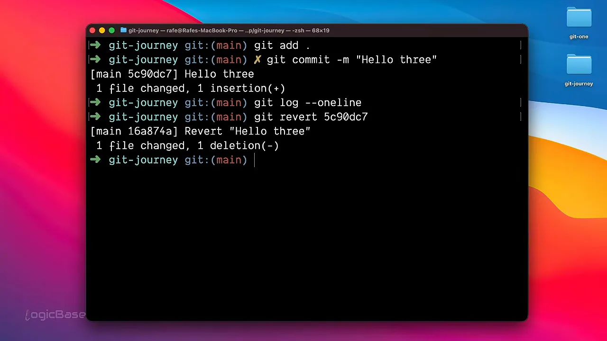
GitHub의 커밋 목록에서도 노란 테두리의 Revert "Hello three"가 바로 아래 Hello three 커밋 위에 따로 보여요. 원격의 다른 사람도 무엇을 왜 되돌렸는지 알 수 있어요.
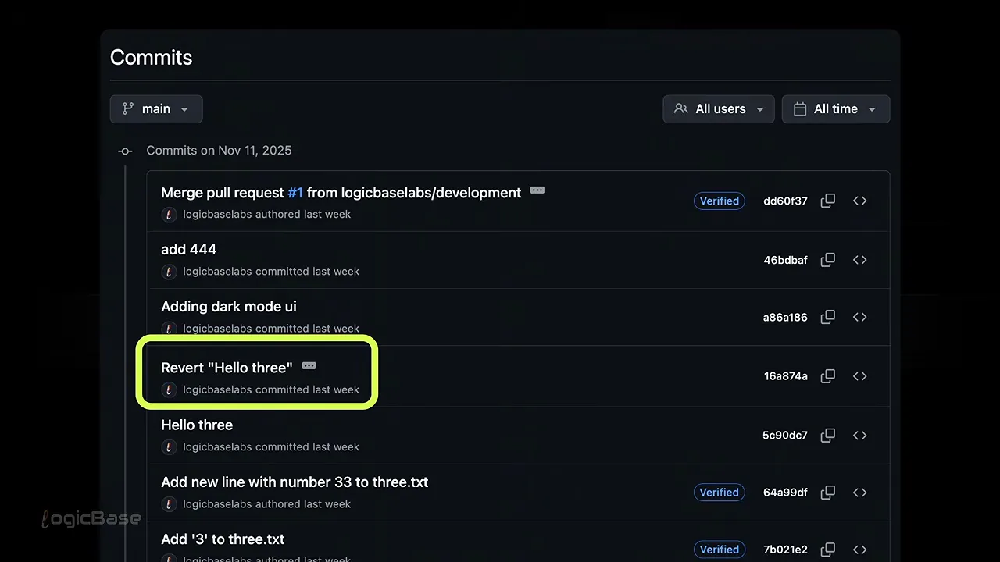
reset은 그 뒤 커밋을 기록 없이 버리지만, revert는 되돌렸다는 사실이 기록에 남아요. 영상 01:12:18에서 보기rebase와 풀 리퀘스트
feature 브랜치에서 일하는 동안 다른 개발자가 main에 새 커밋을 넣었어요. 그 변경을 feature에도 받고 싶어요. 앞에서 본 것처럼 main을 merge할 수 있지만, merge는 할 때마다 병합 커밋이 하나씩 더 생겨요. 여러 번 하면 git log가 어지러워져요. 이럴 때 쓰는 게 rebase예요.
rebase는 무엇을 하나요
아래 그림이 rebase 전이에요. 'MAIN' 줄의 Shared Commit에서 feature가 갈라졌고, 그 뒤 main에는 main_commit_1·2가, feature에는 feature_commit_1·2가 각각 쌓였어요.
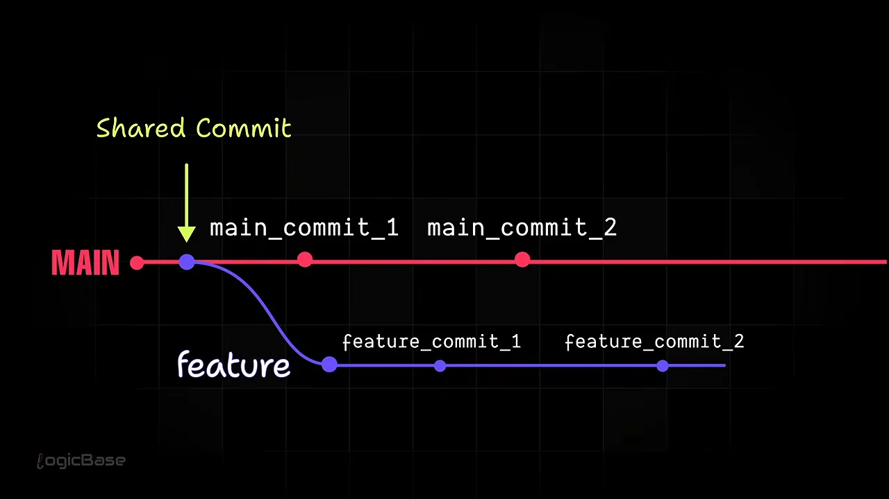
feature에서 git rebase main을 치면 Git이 세 가지를 해요. 먼저 두 브랜치의 공통 커밋을 찾아요. 그 뒤의 feature 커밋을 잠시 빼 두고, main의 새 커밋을 놓아요. 마지막으로 빼 둔 feature 커밋을 그 위에 하나씩 다시 얹어요. 아래 그림처럼 feature 줄이 main_commit_2 뒤에서 시작해 main_commit_1·2를 품고 feature_commit이 이어지는 한 줄이 돼요.
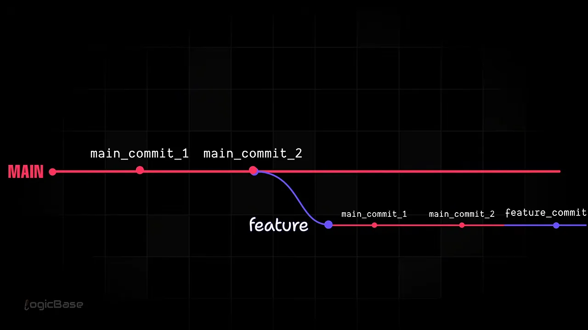
강사는 dark mode 예제로 직접 보여 줘요. feature에서 1.txt에 "adding dark mode functionality"를 커밋하고, main에서 2.txt에 "adding dark mode UI"를 커밋해요. feature로 돌아와 git rebase main을 치면 "Successfully rebased and updated refs/heads/feature"가 뜨고, main의 2.txt가 feature에도 들어와요.
공용 브랜치에서는 쓰지 않아요
rebase는 기록을 다시 써요. 커밋 ID까지 바뀌어요. 같은 브랜치를 다른 사람도 쓰고 있다면, 내가 rebase한 커밋이 그 사람의 로컬 사본과 맞지 않아 pull이나 동기화가 안 돼요. 강사의 결론은 이래요. 혼자 쓰는 개인 브랜치에서는 안전하고, 공유 원격 브랜치에 이미 있는 커밋은 다시 쓰지 마세요. 꼭 써야 하면 팀에 먼저 알려요.
Just avoid rewriting commits that already exist on a shared remote branch.
공유 원격 브랜치에 이미 있는 커밋만은 다시 쓰지 마세요.
— 영상 01:16:33
풀 리퀘스트로 main에 합치기
풀 리퀘스트(PR(Pull Request))는 "내 브랜치에서 바꾼 것을 검토하고, 괜찮으면 main에 합쳐 주세요"라는 요청이에요. 남의 저장소에 직접 바꿀 권한이 없을 때도 이 방법으로 코드를 보내요.
GitHub 저장소의 Pull requests 탭에서 New pull request를 누르면 드롭다운 두 개가 나와요. base는 합칠 곳(main), compare는 가져올 곳(development)이에요. 아래 Comparing changes 화면 위쪽에서 base: main ← compare: development를 고르면, 아래에 바뀐 파일과 추가·삭제된 줄이 그대로 보여요.
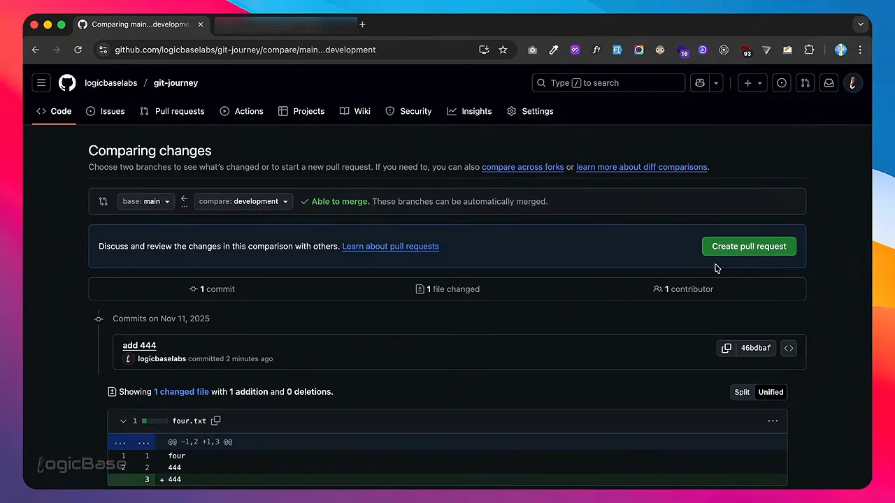
Create pull request를 누르고 제목(Merge development updates into main)과 설명을 적어 PR을 만들어요. PR 안에는 세 탭이 있어요. Conversation에서 팀원과 의견을 나누고, Commits에서 들어갈 커밋을, Files changed에서 파일별 변경을 봐요. 리뷰가 끝나면 Merge pull request → Confirm merge를 눌러요. 아래 화면에 보라색 Merged 표시와 "Pull request successfully merged and closed"가 떠요.
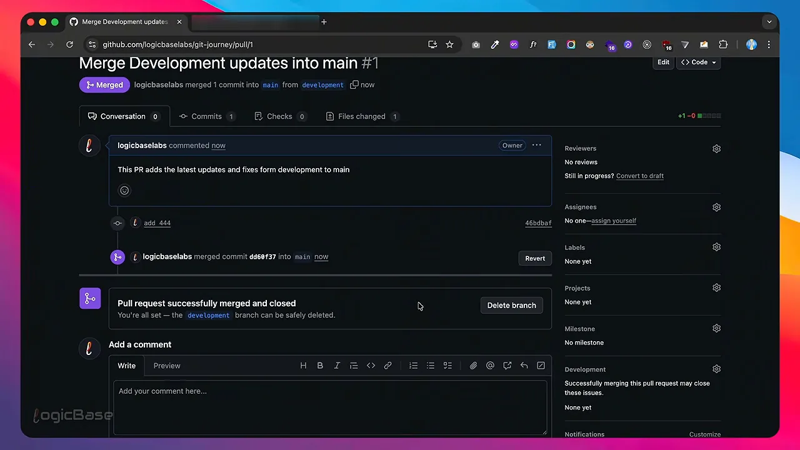
강사는 소프트웨어 회사들이 Git과 GitHub를 이렇게 쓴다며 강의를 마쳐요.